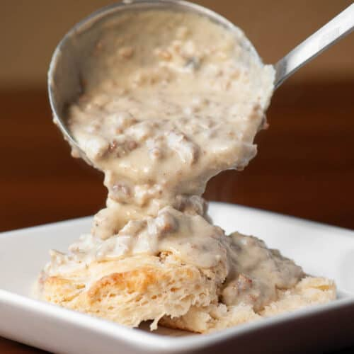

Biscuits n' Gravy

How to Make Biscuits N Gravy
You'll find a detailed ingredient list and step-by-step instructions in the recipe below, but let's go over the basics:
Biscuits n Gravy Ingredients
- Biscuits:This easy recipe calls for refrigerated biscuits. You could also try basic biscuits, if you want to go the homemade route.
- Sausage You'll need a package of pork sausage
- Flour: All-purpose flour acts as a thickening agent.
- Milk:Milks adds richness and works with the flour to creat the perfect texture.
- Seasonings:The gravy is simply seasoned with salt and pepper.
How to Make Gravy for Biscuits n Gravy
Here's a brief overview of what you can expect when you make homemade biscuits n gravy
- Prepare the Biscuits
- Cook the sausage
- Add the flour, then stir in the milk and bring to a boil
- Reduce to a simmer and continue cooking for two minutes.
- Season to taste.
Ingredients
- 1 (16 ounce) can refrigerated jumbo buttermilk biscuits
- 1 (9.6 ounce) package Jimmy Dean Original Hearty Pork Sausage Crumbles
- 0.25 cup flour
- 2.5 cups milk
- salt and freshly ground black pepper to taste
Directions
- Preheat the oven to 350 degrees F. Arrange biscuits 1 to 2 inches apart on an ungreased cookie sheet. Bake in the preheated oven until golden brown, about 13 to 15 minutes
- Meanwhile, cook sausage in a large skillet over medium heat until thoroughly heated, stirring frequently, about 5 to 6 minutes.
- Stir in flour until well comvined. Gradually add milk, stirring continuously, until the gravy thickens and comes to a boil. Reduce heat to medium-low; simmer and stir for 2 more minutes. Season to taste with salt and pepper
- Split biscuits in half. Place 2 halves on each of 8 plates; top with about 1/3 cup gravy.